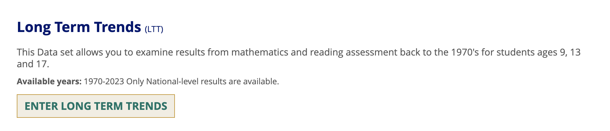
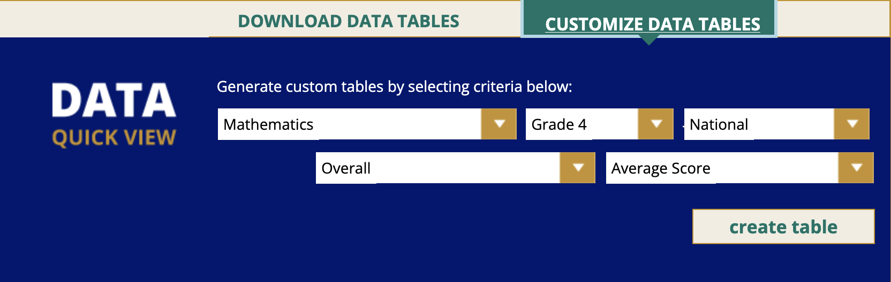
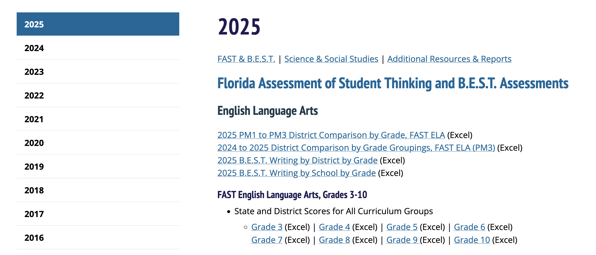
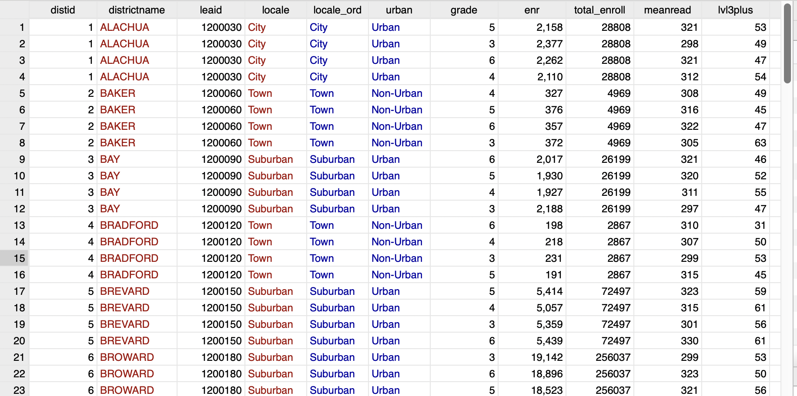
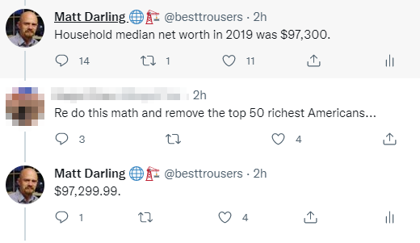
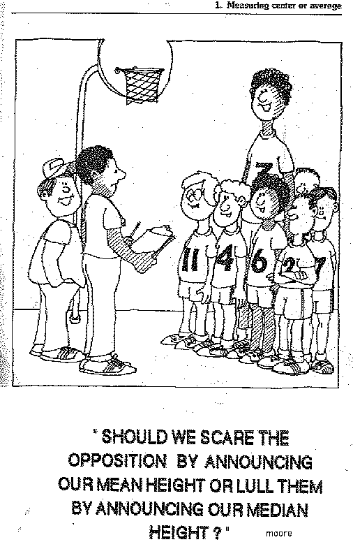
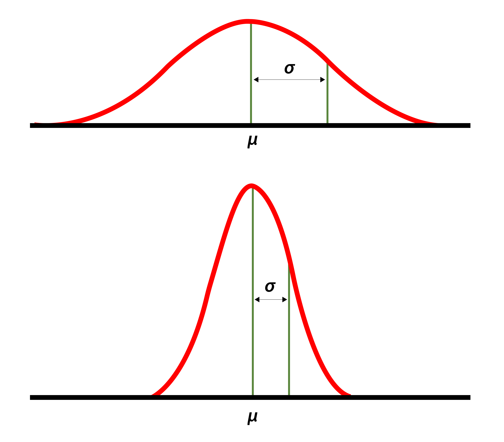

Module 2 — The Quantitative Education Data Landscape
The Quantitative Education Data Landscape
Module 2 • Recorded Lecture • Week of May 19, 2026
EDA6931 | Quantitative Methods in Educational Administration
The Quantitative Education Landscape
During the Saturday session, we looked at the Gatorville County Schools data and ran some exploratory commands. For example, we created a summary table and produced a histogram.
Today’s lecture provides a more formal vocabulary for some of the content we covered, and bridges us to future weeks. This is a comprehensive orientation to quantitative data before we pivot next week to thinking about how these data can be used to answer questions of research and practice.
Huffaker · EDA6931 · Module 2
Agenda
1
The Data Landscape — types of data and ways to engage with them
2
Variables — what they are and the kinds you will see
3
Summarizing data — why we summarize, and the features of distributions
4
Construct vs. measure congruence
Huffaker · EDA6931 · Module 2
Types of Quantitative Educational Data
Observational / Administrative
Demographic information: race/ethnicity, gender
Test scores
GPA
Attendance
Special education or economic disadvantage
Survey
Very flexible but can be high cost/effort
Experiences, perceptions, effort, behaviors
“Other” activities: sports participation, volunteering etc.
Experimental
Derived from a randomized controlled trial
Treatment assignment, dosage
Measures of baseline and endline status
Huffaker · EDA6931 · Module 2
PlayPosit Question 1
A school district administers an end-of-year survey to all teachers asking about their use of formative assessment practices. Which type of quantitative education data is this?
Observational / Administrative
Survey
Experimental
None of the above
Answer: B — Survey
A structured questionnaire fielded to teachers, asking them to self-report on their practices. The defining feature of survey data is structured self-report — capturing experiences, perceptions, and behaviors that wouldn’t show up in administrative records or test scores.
If teacher use of formative assessment had been recorded by observers walking classrooms (institutional process), it would be observational/administrative. If teachers had been randomly assigned to a coaching program, the data would be experimental.
Huffaker · EDA6931 · Module 2
Unit of Analysis — what level are the data generated/presented at?
National
State
District
School
Classroom
Student
Subgroups (e.g., by gender, race/ethnicity, etc.)
Huffaker · EDA6931 · Module 2
Unit of Analysis Example: NAEP — “The Nation’s Report Card”
Huffaker · EDA6931 · Module 2
PlayPosit Question 2
A researcher runs describe on a NAEP file and sees this output. What is the unit of analysis?
Contains data from naep_state_2024.dta
obs: 50
vars: 8
variable name storage type variable label
state str20 State name
year int Year (all values = 2024)
grade byte Grade level
reading_score float Avg reading scale score
Student
Student-year
State
State-year
Answer: C — State
The file has 50 observations, which matches the 50 U.S. states. Every row has year == 2024, so time isn’t varying across rows. Each row represents one state in one year — but since the year is fixed, the operating unit is state.
If the file had multiple years (e.g., 50 states × 5 years = 250 obs), the unit would be state-year. Student or student-year would require individual children in the rows — not aggregated state values.
Huffaker · EDA6931 · Module 2
Quantitative Data Structures
Cross-sectional
Many entities · One time period
2023 NAEP grade 4 state-level table
Repeated cross-sectional
Different entities · Multiple time periods
NAEP Main: different student samples each cycle
Panel (longitudinal)
Many entities · Many time periods
GCS extract: 1,500 students × 3 years
Huffaker · EDA6931 · Module 2
NAEP: Cross-sectional vs. Panel Data Example

School and Teacher Questionnaire Study (STQ)
State- and district-level results from the 2021 NAEP School and Teacher Questionnaires. Available year: 2021 only — cross-sectional.
Long Term Trends (LTT)
Mathematics and reading assessment results from the 1970s for students ages 9, 13, and 17. Available years: 1970–2023 — panel data at the national level (one nation tracked across many years).
Huffaker · EDA6931 · Module 2
PlayPosit Question 3
A researcher pulls the NCES IPEDS Fall Enrollment file for 2022. The file has one row per U.S. postsecondary institution, reporting that institution’s 2022 enrollment headcount. What data structure is this?
Cross-sectional
Repeated cross-sectional
Panel (longitudinal / time-series)
Cannot tell from the description
Answer: A — Cross-sectional
Many entities (every U.S. postsecondary institution) observed in one time period (2022). That is the definition of cross-sectional.
If the file pulled IPEDS Fall Enrollment for one institution across many years, it would be time-series. If it pulled every institution across many years, it would be panel.
Huffaker · EDA6931 · Module 2
Engaging with Quantitative Education Data
Interactive Dashboards or Tables Generators
Create tables and figures by toggling settings on (usually) web-based dashboards.
Downloadable Summaries & Reports
Downloadable (usually) pdf/document summaries of quantitative data (e.g., test scores), usually strictly descriptive.
Data Files
“Raw” or lightly cleaned/aggregated files that you can download or pull using an API to analyze yourself using Excel or statistical software (e.g., R, Stata).
→ Easier to use but point-and-click provides less flexibility to answer novel or unique research questions.
→ Most useful for original research but requires more work from the user.
Huffaker · EDA6931 · Module 2
Examples from NAEP

Huffaker · EDA6931 · Module 2
Example from the Florida Department of Education

Huffaker · EDA6931 · Module 2
Variables
Attributes of members in the sample that differ (“vary”) across members.
Variables must vary — although sometimes we do not see variation within a particular sample.
E.g., “state of residence” is a common variable but if we choose to focus only on students attending school in Florida, it won’t vary.
Huffaker · EDA6931 · Module 2
Types of Variables
Type
Description, Types & Examples
Categorical
Unordered categories: “Nominal” or “naming” variables:
Dichotomous (or “dummy” / “binary” / “indicator”): two possible groups, e.g., eligible for FRPL
Polychotomous (or just “categorical”): two or more groups, e.g., race/ethnicity admin categories
Ordered categories: “Ordinal” e.g., class ranking
Continuous
On an “interval scale” with equal distance between values (e.g., income, height, test scores)
A ratio (still an interval scale) e.g., days absent over days enrolled = absenteeism rate
Attend to units when working with continuous variables
In your district’s student information system, special_ed_status is stored as 0 or 1 (1 = student has an IEP). What type of variable is this?
Continuous
Dichotomous (binary / dummy / indicator)
Ordinal categorical
Nominal polychotomous
Answer: B — Dichotomous
Two unordered groups (IEP / no IEP), coded as 0 or 1. That’s the textbook definition of a dichotomous variable — also called a dummy, binary, or indicator.
It is not continuous: it can only take two values. It is not ordinal: there is no inherent order between “has IEP” and “no IEP” — these are categories, not ranks. And it is not polychotomous: that would require more than two categories (e.g., race/ethnicity with five groups).
Huffaker · EDA6931 · Module 2
Variable Types in Stata
Variables
NameLabel
student_idStudent ID
school_idSchool ID
student_nameStudent name
yearYear
gradeGrade level
genderGender
race_ethRace/ethnicity
school_nameSchool name
frlFRPL eligible
iepIEP
prior_score_elaELA scale score, prior year
Black — plain numeric (continuous + 0/1 dummies)
Blue — labeled numeric (categories displayed as labels)
Red — string (names, codes, free-text)
Stata picks the numeric sub-type (byte, int, long, float, double) automatically.
Huffaker · EDA6931 · Module 2
PlayPosit Question 5
In gvl_students.dta, the variable gender shows up in blue in the Variables window. When you run tab gender, the output displays “Female” and “Male” rather than 1 and 2. What kind of variable is gender?
A string variable
A numeric variable with no value label
A labeled numeric variable
A categorical variable that cannot be used in calculations
Answer: C — Labeled numeric
The blue color in the Variables window is the tell. gender is stored numerically (as 1 or 2), but a value label translates those numbers to “Female” and “Male” for display.
It is not string: those show up red. It is not a plain numeric: those show up black. And labeled variables are usable in calculations — Stata operates on the underlying number, the label is just for display.
Huffaker · EDA6931 · Module 2
Can you tell me something in aggregate from this data?

Huffaker · EDA6931 · Module 2
Reducing the information
It’s really hard to identify patterns, summarize variables, or make comparisons just by staring at raw data in spreadsheets.
Our working memory limits the number of quantities we can hold in our head simultaneously (<10), so we must find ways to reduce the information.
Indeed, quantitative analysis is often critiqued as “reductive” but our ability to make such data useful is actually dependent on being able to distill vast information into more compact quantities.
Huffaker · EDA6931 · Module 2
We can ask questions of the data to arrive at more information-dense quantities
What reading scale score do districts tend to have?
The middle score:
The most common score:
The average score:
How far apart are the lowest and highest scores?
To what extent are observations clustered around a measure of central tendency vs. the extremes?
Are some observations at extreme values?
What is the spread of the middle of the data?
Is data more extreme on one side versus the other?
standard deviation | skew | outlier | kurtosis | symmetry | interquartile range | mean | mode | median | range | variance
Huffaker · EDA6931 · Module 2
We can ask questions of the data to arrive at more information-dense quantities
What reading scale score do districts tend to have?
The middle score: median
The most common score: mode
The average score: mean
How far apart are the lowest and highest scores? range
To what extent are observations clustered around a measure of central tendency vs. the extremes? variance · standard deviation
Are some observations at extreme values? outliers
What is the spread of the middle of the data? interquartile range
Is data more extreme on one side versus the other? skew
standard deviation | skew | outlier | kurtosis | symmetry | interquartile range | mean | mode | median | range | variance
Huffaker · EDA6931 · Module 2
Measures of central tendency — Example 1
Mean: the average or “norm” of all values: Σ(x) / n
Median: the 50th percentile — half the values are above and half are below
Mode: the most frequently observed value
Example 1: 2, 3, 3, 3, 4, 5, 6, 8, 8
Mean =
Median =
Mode =
Huffaker · EDA6931 · Module 2
Measures of central tendency — Example 1 (answers)
Mean: the average or “norm” of all values: Σ(x) / n
Median: the 50th percentile — half the values are above and half are below
Mode: the most frequently observed value
Example 1: 2, 3, 3, 3, 4, 5, 6, 8, 8
Mean = (2+3+3+3+4+5+6+8+8) / 9 = 42 / 9 = 4.67
Median = 4
Mode = 3
Huffaker · EDA6931 · Module 2
Measures of central tendency — Example 2
Example 2: 1, 3, 5, 6, 6
Mean =
Median =
Mode =
Try this one with the same three measures. Notice when mean, median, and mode start to diverge.
Huffaker · EDA6931 · Module 2
Measures of central tendency — Example 2 (answers)
Example 2: 1, 3, 5, 6, 6
Mean = (1+3+5+6+6) / 5 = 21 / 5 = 4.2
Median = 5
Mode = 6
Mean (4.2) < median (5) < mode (6). When the three diverge, the distribution is skewed — we come back to this in a few slides.
Huffaker · EDA6931 · Module 2
Mean vs. Median — know which one you’re using and why
Median is less sensitive to outliers.


Huffaker · EDA6931 · Module 2
PlayPosit Question 6
A school district reports that the mean household income of its families is $87,000 and the median is $58,000. What is the most likely explanation for the gap?
The income distribution is symmetric
A small number of very high-income families are pulling the mean above the median
A small number of very low-income families are pulling the mean below the median
The mean and median should always be equal — something is wrong with the data
Answer: B — High-income outliers pull the mean above the median
Mean ($87,000) is well above median ($58,000). The mean is sensitive to extreme values; the median is not. A handful of high-income households pull the mean upward while leaving the median (the 50th percentile) where it is.
This is the classic right-skewed distribution — typical for income, wealth, and most other dollar-denominated variables. If low-income outliers were the issue, mean would be below median, not above. A symmetric distribution would have mean ≈ median.
Huffaker · EDA6931 · Module 2
Variability — how spread out are the values of a variable?

Variance is the expected value of the (i.e., average) deviation from the mean, squared.
0 variance = no difference in values
Always positive
Bigger number = more spread
Standard Deviation (SD or s) is the square root of variance.
It is the main measurement used for spread and measures the “typical” distance from the mean. We will return to this concept in Module 5 with more technical and computational details.
Huffaker · EDA6931 · Module 2
Outliers and skew
Boxplot
The middle 50% of the data sits inside the box; whiskers reach the typical range; dots beyond are outliers.
Symmetric
Left-skewed
Right-skewed
In skewed distributions, the mean is pulled toward the tail; the mode stays at the peak; the median sits between them.
Huffaker · EDA6931 · Module 2
Construct vs. measure congruence
CONSTRUCT
The thing you actually care about.
Student learning · Teacher quality · School climate
MEASURE
The thing we can actually quantify and record.
A scale score on one specific test · A VA estimate · A one-shot climate survey
The gap between the construct and the measure is the construct-measure congruence problem.
Huffaker · EDA6931 · Module 2
PlayPosit Question 7 · Reflection
A school principal tells you: “Our school’s average 3rd-grade reading score is 305, which is exactly the district mean.” What additional information about the distribution of scores within the school would you want before deciding whether the school is performing well?
Respond in 2–3 sentences. Use today’s vocabulary.
Looking ahead to Module 3
Module 3 opens Tuesday, May 27
Capstone Draft 1 due in Module 3
Module 4 returns to Stata with today’s distribution concepts